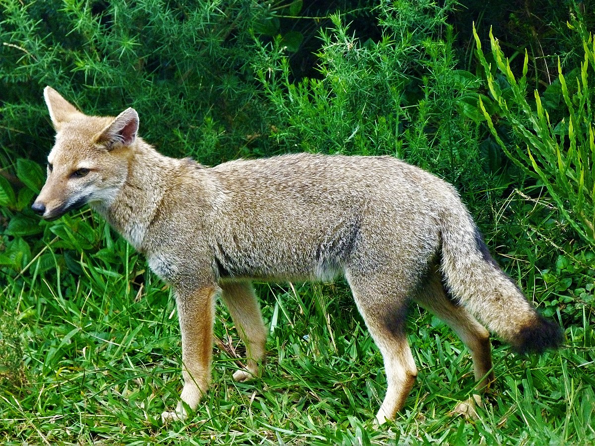
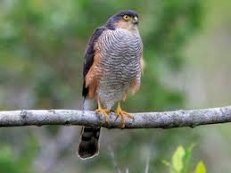
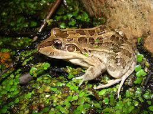

Mamiferos
El zorro gris (Lycalopex griseus), conocido también como zorro gris patagónico o zorro chico, es un mamífero carnívoro nativo del sur de América del Sur, especialmente en Argentina y Chile. Es de tamaño mediano, con un cuerpo esbelto que mide entre 50 y 70 cm de longitud, más una cola de unos 30 cm. Su pelaje es gris con tonalidades marrones y rojizas, y su cola es tupida con una punta negra.
Ciervo de los Pantanos (Blastocerus dichotomus): Especie emblemática del parque y el mayor ciervo de Sudamérica. Vive en zonas pantanosas y está en peligro de extinción debido a la destrucción de su hábitat.
Carpincho (Hydrochoerus hydrochaeris): El roedor más grande del mundo, conocido por vivir en áreas cercanas a cuerpos de agua. Es común en los humedales del parque.
Aves
Gavilán: El que aparece en la imagen podría ser un gavilán mixto o un taguató, ambos presentes en Argentina y comúnmente vistos en áreas boscosas o abiertas.
Federal común: Este pájaro de plumaje rojo y negro es característico de humedales y áreas cercanas a cuerpos de agua en Argentina.
Biguá (Cormorán Neotropical): Común en cuerpos de agua dulce y salada a lo largo de todo el país, conocido por su capacidad de buceo para capturar peces.
Anfibios
Rana criolla (Leptodactylus latrans): También conocida como rana de cuatro ojos, es una rana grande y común en humedales y cuerpos de agua de la región. Se caracteriza por su tamaño robusto y su canto fuerte durante la época de reproducción.
Sapito de cuatro ojos (Pleurodema nebulosum): Llamado así por las manchas oculares en su espalda que sirven para engañar a los depredadores. Es una especie que habita tanto en áreas de agua como en pastizales cercanos.
Escuercito común (Odontophrynus americanus): Un sapo pequeño que habita en áreas abiertas y de humedales. Se entierra durante la estación seca y emerge para reproducirse en los charcos temporarios tras las lluvias.
Flora
Tala (Celtis tala): Es un árbol típico de los bosques ribereños y es una de las especies más comunes en los alrededores de humedales. Tiene hojas pequeñas y espinas en sus ramas, y es fundamental para la formación del ecosistema conocido como talar, que alberga una gran diversidad de fauna.
Sauce Criollo (Salix humboldtiana): Este árbol es muy característico de los humedales y crece a lo largo de las orillas de los ríos y lagunas. Sus largas ramas caídas y hojas estrechas lo hacen fácilmente identificable, y su presencia es importante para la estabilidad del suelo y la filtración de agua.
Cortadera (Cortaderia selloana): También conocida como plumerillo o pampa grass, es una planta herbácea perenne que crece en áreas abiertas y húmedas. Sus grandes penachos de flores blancas o plateadas son muy llamativos y cumplen una función ecológica en la protección del suelo y la regulación de los ecosistemas de pastizal.